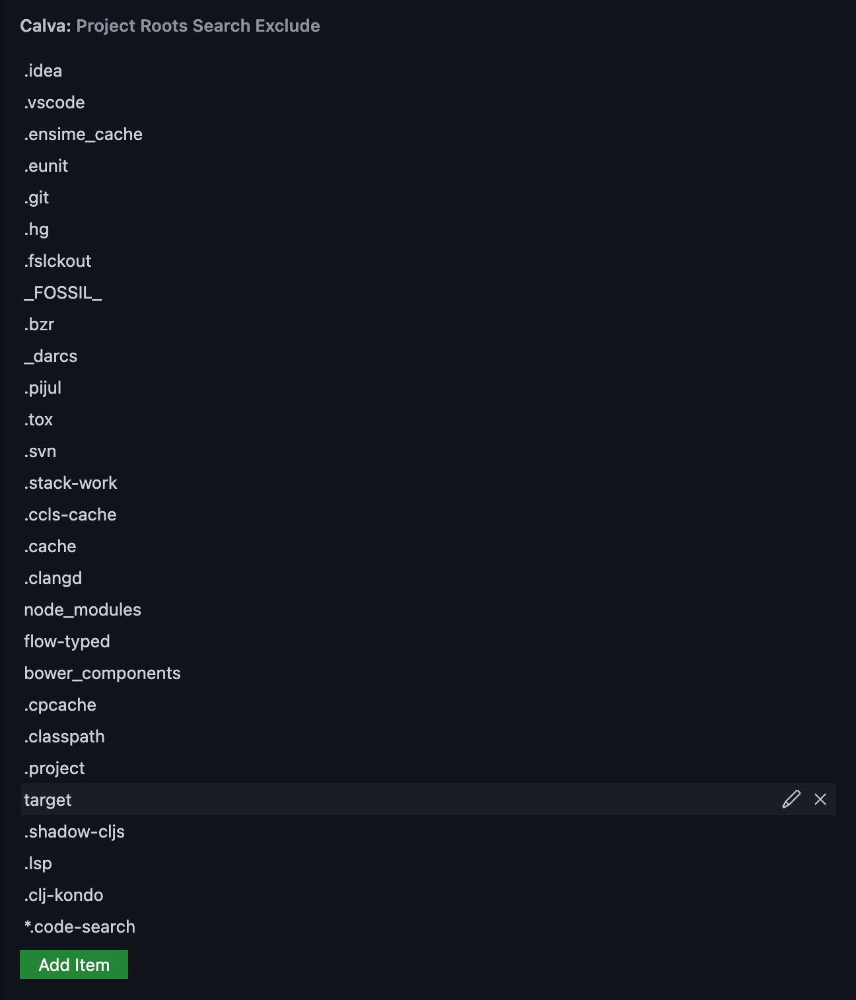

Connect Calva to Your Project
When connected to your project's REPL Calva lets you evaluate code, supporting Interactive Programming. The REPL connection is also used to provide IDE functionality through the dynamic knowledge about the project that the REPL enables. The REPL communication depends on that your project has an nREPL server running, and that the cider-nrepl middleware is enabled.
For the easiest way to provide your project with these dependencies, the recommended way to connect is to use the so called Jack-in command.
Jack-in: Let Calva Start the REPL For You
This way Calva can make sure it is started with the dependencies needed for a working Clojure and/or ClojureScript session. This is often referred to as Jack in (because that is what it is called in CIDER).
Jack-in supports both CLJ and for CLJS, and has built-in configurations for Leiningen, deps.edn, shadow-cljs, Gradle projects, as well as for the CLJS repl types: Figwheel Main, lein-figwheel (legacy Figwheel), shadow-cljs, and ClojureScript built-ins for both browser and node.js. Using jack-in provides your development environment with all the dependencies you need for Calva to work.
It works like so:
- Open your project in VS Code.
- Issue the command Start a Project REPL and Connect:
ctrl+alt+c ctrl+alt+j. - Answer the quick-pick prompts telling Calva about project types and what profiles to start. (See the Jack-in Project Types and Profiles wiki page for more info if needed.)
See also: Workspace Layouts
About project roots
You must have a project file, such as project.clj for Leiningen, or deps.edn for deps.edn, or shadow-cljs.edn for shadow-cljs, or settings.gradle/settings.gradle.kts for Gradle in the directory opened in VS Code in order for jack-in to work. If, after adding the project file, you experience an error during jack-in that says something could not be located, make sure you have the correct dependencies in your project file. For example, when using the Figwheel Main project type, you should have com.bhauman/figwheel-main in your project dependencies.
See also below, regarding multiple projects in a workspace
Aliases, Profiles, Builds
When Jack-in starts it will depend on the project type, and whether ClojureScript is involved or not, and if it is, what kind of ClojureScript project, what will happen next. Calva will analyze the project files and will then give you prompts with selections based on what is found there.
You will need some basic knowledge about the project and the project type terminologies to answer the prompts.
There are ways to tell Calva the answers to these prompts beforehand, so that Jack-in can be a zero-prompting command. Read on.
Customizing Jack-in
The main mechanism for customizing your Jack-in, including automating menu selections, and custom CLJS REPL types is Custom Connect Sequences.
There are also these settings:
calva.jackInEnv: An object with environment variables that will be added to the environment of the Jack-in process.calva.myCljAliases: An array ofdeps.ednaliases not found in the project file. Use this to tell Calva Jack-in to launch your REPL using your user defined aliases.calva.myLeinProfiles: An array of Leiningen profiles not found inproject.clj. Use this to tell Calva Jack-in to launch your REPL using your user defined profiles.calva.openBrowserWhenFigwheelStarted: For Legacy Figwheel only. A boolean controlling if Calva should automatically launch your ClojureScript app, once it is compiled by Figwheel. Defaults totrue.calva.depsEdnJackInExecutable: A string which should either beclojureordeps.clj, orclojure or deps.clj(default). It determines which executable Calva Jack-in should use for starting adeps.ednproject. With this setting at its default,clojure or deps.clj, Calva will test if theclojureexecutable works, and use it if it does, otherwisedeps.cljwill be used, which is bundled with Calva.
Note
When processing the calva.jackInEnv setting you can refer to existing ENV variables with ${env:VARIABLE}.
Options for the Jack-in Command
The calva.jackIn command takes an optional options argument defined like so:
options?: {
connectSequence?: string | ReplConnectSequence;
disableAutoSelect?: boolean;
}
Where ReplConnectSequence is a Connect Sequences. If you provide a string it needs to match against a built-in or custom connect sequence. With disableAutoSelect you can force the jack-in menus to be provided even if a custom connect sequence is set to be autoSelected.
You can provide these options from keyboard shortcuts or from Joyride scripts.
Here's a keyboard shortcut for connecting to a running REPL bypassing any connect sequence with autoSelectForConnect.
{
"command": "calva.jackIn",
"args": {"disableAutoSelect": true},
"key": "ctrl+alt+c shift+j",
},
A Joyride command for starting a deps.edn REPL for a project in the root of the workspace.
(vscode/commands.executeCommand
"calva.jackIn"
(clj->js {:connectSequence {:projectType "deps.edn"
:projectRootPath ["."]}}))
It will prompt for any aliases it finds in the deps.edn file.
Connecting Without Jack-in
If, for whatever reasons, you can't use Jack-in with your project (possibly because the REPL is started as part of some other job) all is not lost. Old fashioned Connect to a running REPL is still there for you. For all features to work in Calva while connecting to a running REPL, your environment needs to have REPL related dependencies set up.
However, just as before it can be tricky to get the dependencies right. Consider using Jack in to inform yourself on how to start your REPL to Calva's satisfaction. When you use Jack in, Calva starts a VS Code task for it and the command line used is displayed in the terminal pane used to handle the task. Reading that command line tells you what dependencies are needed for your project.
Even better: Copying that command line gives you the command to start the REPL with the correct dependencies.
All this said, I still recommend you challenge the conclusion that you can't use Jack-in.
Note
There is a Calva command for copying the Jack-in command line to the clipboard.
Customizing Connect
If there is an nRepl port file, Calva will use it and not prompt for host:port when connecting. You can make Calva prompt for this by setting the boolean config calva.autoSelectNReplPortFromPortFile to false.
With the setting calva.autoConnectRepl you can make Calva automatically connect the REPL if there is an nRepl port file present when the project is opened.
With this and the below mentioned auto-select options you can make connect a prompt-less experience. See: Connect Sequences.
Options for the Connect Command
The calva.connect command takes an optional options argument defined like so:
options?: {
host?: string;
port?: string;
connectSequence?: string | ReplConnectSequence;
disableAutoSelect?: boolean;
}
Where ReplConnectSequence is a Connect Sequences. If you provide a string it needs to match against a built-in or custom connect sequence. With disableAutoSelect you can force the connect menus to be provided even if a custom connect sequence is set to be autoSelected.
You can provide these options from keyboard shortcuts or from Joyride scripts.
Here's a keyboard shortcut for connecting to a running REPL bypassing any connect sequence with autoSelectForConnect.
{
"command": "calva.connect",
"args": {"disableAutoSelect": true},
"key": "ctrl+alt+c shift+c",
},
A Joyride command for connecting to a REPL on port 55555, without being asked for project type:
(vscode/commands.executeCommand "calva.connect" (clj->js {:port "55555" :connectSequence "Generic"}))
Starting the REPL from application code?
If your project is setup so that the REPL server is started by the application code, you will need to get the cider-nrepl middleware in place. See the cider-nrepl docs about embedding nREPL in your application.
Auto-select Project Type and Project Root
You can make both Jack-in and Connect stop prompting you for project type and project root path in projects where you always want to use the same. See Connect Sequences.
Monorepos / multiple Clojure projects in one workspace
If the workspace is a monorepo, Polylith repo or just a repository with more than one Clojure project, Calva will start the connect sequence with prompting for which project to start/connect to.

When searching for project roots in your workspace, Calva will glob for all files matching project.clj, deps.edn, or shadow-cljs.edn. This is done using VS Code's workspace search engine, and is very efficient. However, in a large monorepo, it is still a substantial task. In order to not waste resources Calva will exclude any directories in the setting calva.projectRootsSearchExclude.

Exclude entry globs
Each entry is a partial glob and will be part of a resulting glob of the form **/{glob1,glob2,...,globN}. This means that all directories in the workspace matching an entry will be excluded, regardless of where in the workspace they reside.
shadow-cljs in full stack projects
shadow-cljs is a bit special in regards to Calva REPL connection. Mainly because you can start shadow-cljs and it's nREPL server in two ways:
- Using the shadow-cljs npm executable
- Via the Clojure REPL in your Leiningen or deps.edn project
These options show up as project types when connecting or jacking in:
- Project type: shadow-cljs
- Project type: deps.edn + shadow-cljs or Leiningen + shadow-cljs
NB: Unless you have good reasons, use the shadow-cljs project type and configure shadow-cljs to use deps.edn or Leiningen for source paths, and for dependency resolution.
Although the other project types work, the wiring is different. When the npm shadow-cljs executable is used, it outputs both shadow-cljs and Clojure related messages in the Jack-in terminal. Whereas when started from Clojure most shadow-cljs output ends up in the Output/REPL window. This gets extra important if you have shadow-cljs tests running automatically.
Leiningen + shadow-cljs middleware issue
Please note that for Leiningen, the command line dependency injection of the shadow-cljs nrepl middleware doesn't work. You need to add it to your project.clj:
:repl-options {:nrepl-middleware [shadow.cljs.devtools.server.nrepl/middleware]}
Troubleshooting
Command Not Found Errors When Jacking In
If you get command not found error when Calva tries to start your project, and you know you have the command installed, it's probably because VS Code starts from an environment where the command is not on the $PATH. It can look like so:
lein update-in :dependencies conj '[nrepl,"0.8.3"]' -- update-in :plugins conj '[cider/cider-nrepl,"0.25.8"]' -- update-in '[:repl-options,:nrepl-middleware]' conj '["cider.nrepl/cider-middleware"]' -- repl :headless
/bin/sh: lein: command not found
Jack-in process exited. Status: 127
The fix is to always start VS Code from the command line:
$ code
You might need to first run the Shell Command: Install code command in PATH.
This will also make sure your REPL has access to the environment you probably expect it to have access to. See below.
Go to Definition Not Working for Java Definitions
On some systems, the Java source may not be installed along with the JDK. The source must be present on your system in order to navigate to Java definitions. See this comment for more details.
Environment Variables Are Not Readable From REPL
If you've added environment variables in your OS, such as in your ~/.bashrc file (Linux), in order for them to be read in a REPL created by Calva's jackin command, VS Code must be started from a shell where the environment variables are defined. For example, if you can open a bash terminal and run echo $SOME_VAR and see the value there, then open VS Code from that terminal with code <project path>.
Viewing the Communication Between nREPL and Calva
It may be helpful to view the messages sent between nREPL and Calva when troubleshooting an issue related to the REPL. See how to do that here.